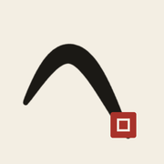

Ink Echo
Draw with a finger or Apple Pencil, and ink paintings from The Met answer your lines. Five experiments in matching a drawn gesture to the brushstrokes a painter actually made.
Lens
Zoom-aware matching. Your lines are fitted at every zoom, position and slight rotation, and the camera flies into the painting at the scale where they fit. A zoom ladder offers Detail, Passage and Composition.
Best for: "this should look like a mountain ridge"
Trace
Your first line picks a painting, then you learn the master's hand: the real strokes near your drawing glow faintly. Strokes that land on them reveal the painting. Miss twice and the brush finds another work.
Best for: slow, attentive drawing; Apple Pencil
Collage
Every stroke is its own question. Each one opens a window onto a different painting, posed so that the painter's stroke sits under yours. Idiosyncratic drawings become collages.
Best for: many quick, different gestures
Handscroll
The scroll keeps unrolling as you draw with a velocity-sensitive dry brush. Your ink soaks in and fades, and only the last few seconds of gesture are matched, laying passages from paintings along a scroll you can unroll at the end.
Best for: continuous, rhythmic drawing
Bloom
Where your line touches a painter's actual ink, ink starts to flow along their connected strokes and reveals the work in the order a brush could have travelled. Longer lines carry more ink.
Best for: watching a painting grow from your mark
Original
The first prototype: a whole-drawing contour match with Ghost and Reveal modes.